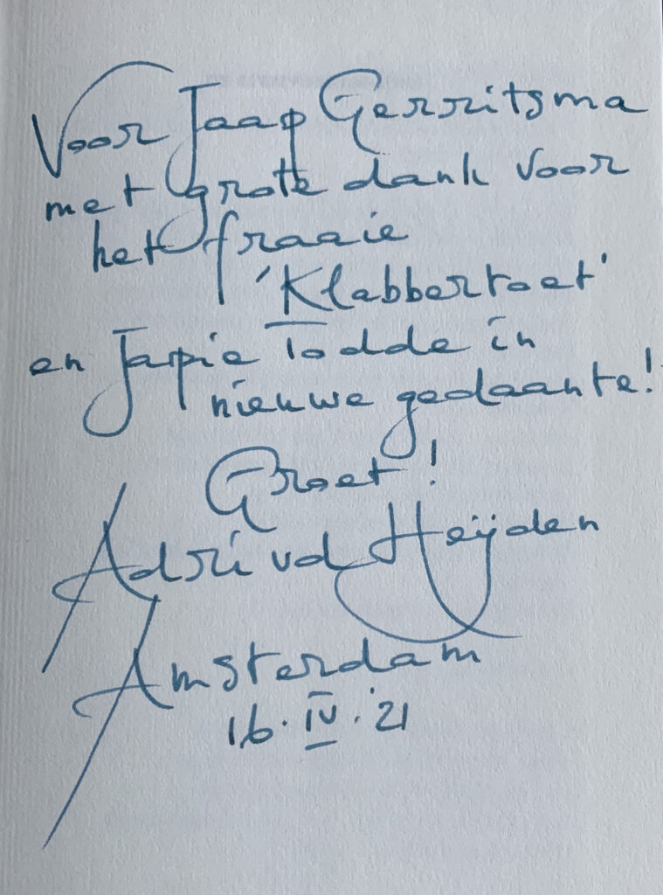

Klabbertoet
Klabbertoet : roman / Jaap Gerritsma. - [Maastricht] : UitgeverÐ TIC, [2020]. - 113 pagina's ; 21 cm.
Het lijkt een idyllisch plaatje: Job (ik-figuur) en Anne zouden hun gepensioneerde leven doorbrengen in Eijsden op hun Hubertushof. Het loopt anders want de oudste zoon uit een eerder huwelijk van Anne accepteert Job niet. Een ruzie loopt uit de hand en de zoon stelt zijn moeder een ultimatum: kiezen voor hem of voor haar partner. Anne kiest voor haar zoon en verlaat de hoeve. Op dat moment begint deze roman. Job is alleen in zijn huis. Mooie herinneringen aan de tijd met Anne ('een utopische socialiste') komen boven maar ook pijnlijke conflicten en een liefde die veranderde. Job ziet in de walnotenboom (de klabbertoet) overeenkomsten met zijn leven: een oude boom met scheuren in de bast. De notenboom wordt omgezaagd maar Job moet een nieuwe weg zien te vinden. Een novelle geschreven in een beeldende taal en met mooie vergelijkingen. Het verhaal is volgens de schrijver (1942, medisch wetenschapper) een persoonlijke geschiedenis waarbij werkelijkheid en fictie samengaan. Van de auteur verschenen eerder de romans 'Bittere maretak' (2009) en 'Ontstemde liefde' (2015) - Recensent: H.W.L. Keus-Asveld
“Treffend, beeldend en kleurrijk geschreven. Ik heb het in een ruk uitgelezen." – Kris Siemons over Klabbertoet
“Zojuist je boek uitgelezen. Ik vond het heel mooi! Zo open en eerlijk geschreven. Had het zo uit." – Maritt Schouten over Klabbertoet
Lees de recensie van de Leestafel hier
Klabbertoet kost €14,90 en kunt u bestellen bij:
Bol.com
Boeken Route
Of bij de uitgever zelf tiC
